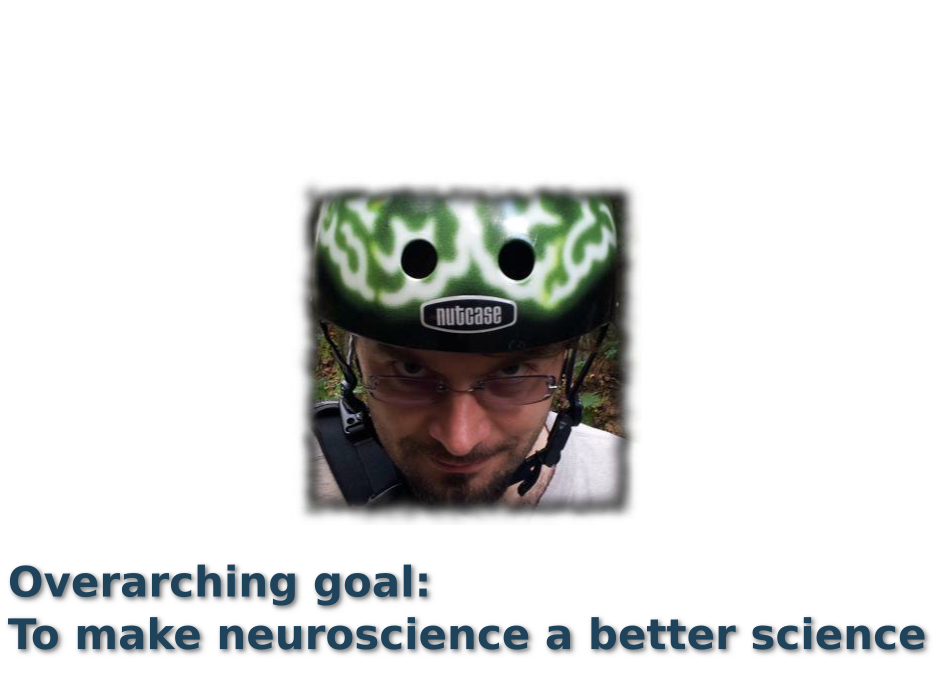
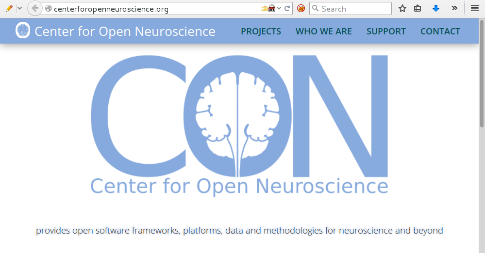
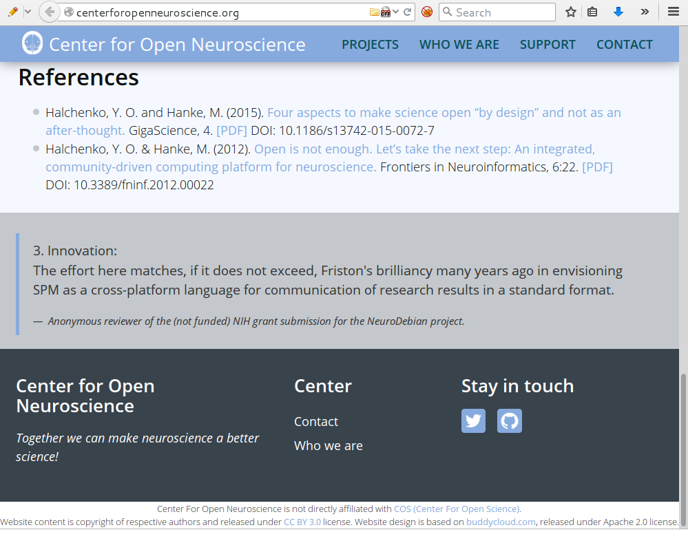
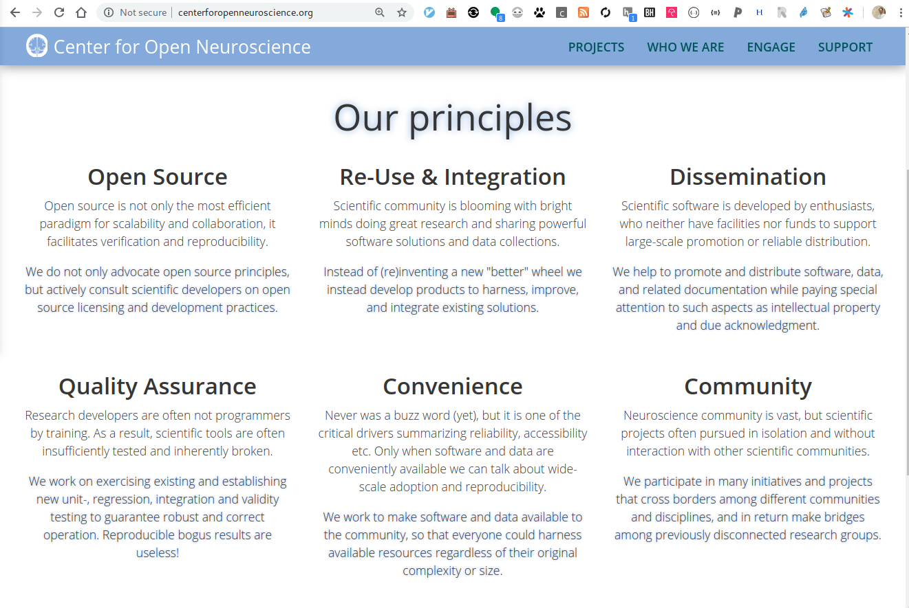
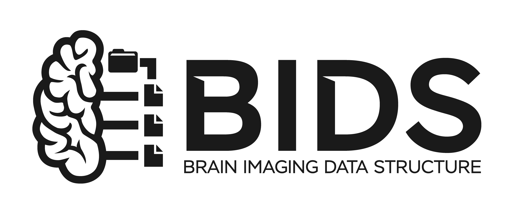

BIDS 2.0
The past, present, and (realistic) future of the Brain Imaging Data Structure.
Yaroslav O. Halchenko @yarikoptic @yarikoptic
|
|
|
Center for Open Neuroscience Department of Psychological and Brain Sciences Dartmouth College, NH, USA 
|
Live slides/Sources: https://datasets.datalad.org/centerforopenneuroscience/talks/2026-nih-bids2.0.html



Brief Bio
Born in Siberia (RSFSR, USSR), Grew up in Ukraine, Matured in U.S.A.
- -1994 Physics Mathematics Gymnasium #17 (Ukraine):
Regional&State Physics and Programming competitions. MS-DOS. Borland Pascal - -1999 VSTU (Ukraine):
Masters in Opto-Electronic Engineering
(@yarikoptic). State Physics and International ACM Programming competitions. Spine diagnostic apparatus. Member of "Small Academy of Science of Ukraine". SPIE. Soros Fellowship (twice). MS-DOS/Windows. Borland Pascal, Delphi, VBA - -2003 University of New Mexico:
Masters in Computer Science
B.Pearlmutter. SOBI/JADE ICA for single trial MEG. Favorite course: Data structures and algorithms. Debian GNU/Linux. C, Matlab, shell. CVS - -2009 Rutgers-Newark/NJIT:
Ph.D. in Computer Science
S.Hanson. fMRI decoding (RFE SVM). RUMBA. HPC sysadmin (cfengine, PBS). M.Hanke. Debian pkg-exppsy (for FSL and PyEPL). Official Debian developer. fMRI/EEG (TRANS)fusion. PyMVPA. C++, Python. SVN, GIT. 1 wife, 3 kids - - NOW Dartmouth College, PBS Department:
Postdoc, Scientist, Research Assistant/Associate/null Professor
J.Haxby. PyMVPA (Hyperalignment, ...), NeuroDebian, DataLad, ReproNim, DANDI, STAMPED, ... 1 dog, 2 cats, Chicken Coop (12 chickens, 1 rooster), ... distribits, CON:





Gorgolewski, K. J., Auer, T., Calhoun, V. D., Craddock, R. C., Das, S., Duff, E. P., Flandin, G., Ghosh, S. S., Glatard, T., Halchenko, Y. O., Handwerker, D. A., Hanke, M., Keator, D., Li, X., Michael, Z., Maumet, C., Nichols, B. N., Nichols, T. E., Pellman, J., Poline, J.-B., Rokem, A., Schaefer, G., Sochat, V., Triplett, W., Turner, J. A., Varoquaux, G., and Poldrack, R. A. (2016). The brain imaging data structure, a format for organizing and describing outputs of neuroimaging experiments. Scientific Data, 3:160044
BIDS Features

|
|
Benefits from datasets standardization into BIDS
- You have seen one BIDS dataset -- you have seen them all!
- You can verify compliance and overall (meta)data consistency using bids-validator
- You can use BIDS-apps (such as mriqc, fmriprep, etc) for turnkey pipelines
- You can use PyBIDS, bids2table, snakebids etc. for scripting
- ... many more benefits ...
- Everyone in neuroimaging should be encouraged to collect/operate on data in BIDS format and contribute back!
See deeper overview at "The Brain Imaging Data Structure (BIDS): an open community standard for neuroscience",
NSF POSE Workshop 2024.

From: The past, present, and future of the brain imaging data structure (BIDS)
By Poldrack et al. Imaging Neuroscience (2024) 2: 1–19.
DOI: 10.1162/imag_a_00103
More of historical intro: MRITogether: Roads to BIDS talk slides.